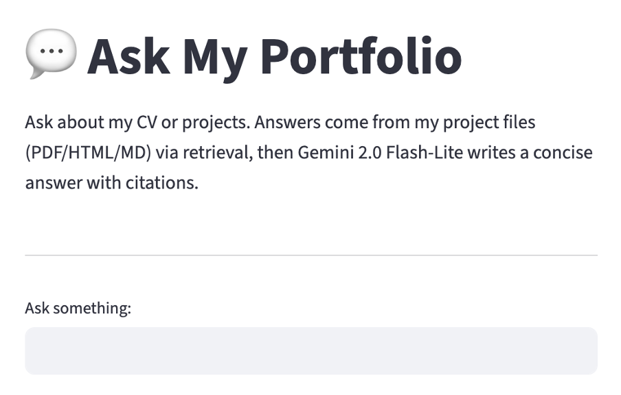

Portfolio LLM
Built an interactive LLM app that indexes my CV and projects, allowing fast retrieval of details about my projects and experiences.
Open app →
MSc Data Science student at the University of Exeter. Specialising in Deep Learning and LLMs for the Financial Industry
Built an interactive LLM app that indexes my CV and projects, allowing fast retrieval of details about my projects and experiences.
Open app →
Built credit risk models on real-world data; explored distributions & multicollinearity; trained and compared Logistic Regression, Random Forest, and XGBoost.
Read report →
Study to identify key factors influencing diabetes diagnosis and evaluation of ML models for classification performance.
Read report →Built a web-based KPI dashboard during my internship at Ekimetrics. Semi-automated reporting pipeline — from raw data ingestion and cleaning to interactive Power BI dashboards.
Not publicly accessible
Conducted a critical analysis of machine learning applications in Type 1 diabetes, evaluating predictive models, diagnostic tools, and treatment innovations.
Read report →
Evaluated various neural network architectures for sentiment analysis on financial news, comparing MLPs, LSTMs, and Transformer models.
Read report →
Designed a complex Multi-Layer Perceptron architecture from scratch using NumPy, achieving comparable ~89% accuracy against a PyTorch implementation.
GitHub Repository →
Engineered a cloud-hosted relational database (Azure SQL) to analyze UK agricultural sustainability. Implemented a normalized (3NF) schema, automated Python data pipelines, and developed a Node.js REST API.
Database Implementation →
Completed the 12-module certification covering Python, SQL, data visualization, machine learning, and applied data science. Verified by IBM via Coursera.
View certificate →Email is the fastest way to reach me. I’m open to freelance collaborations and full-time roles.